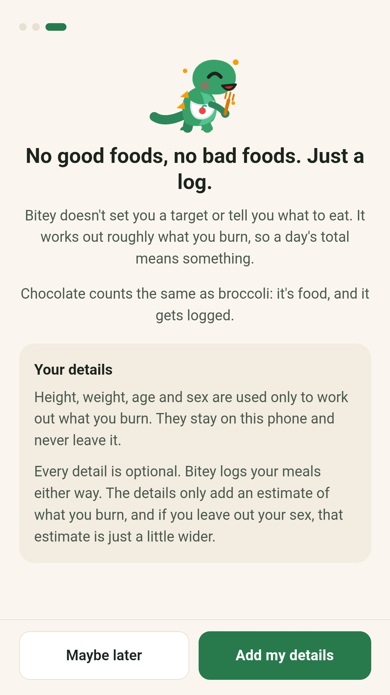
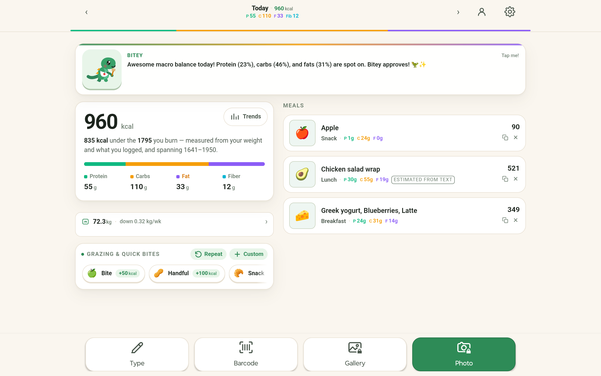
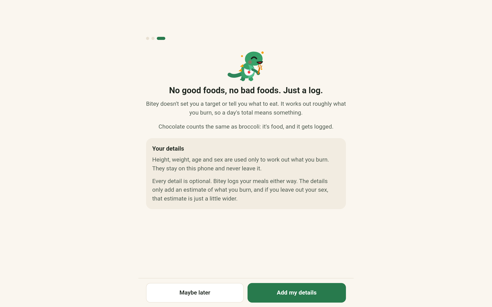
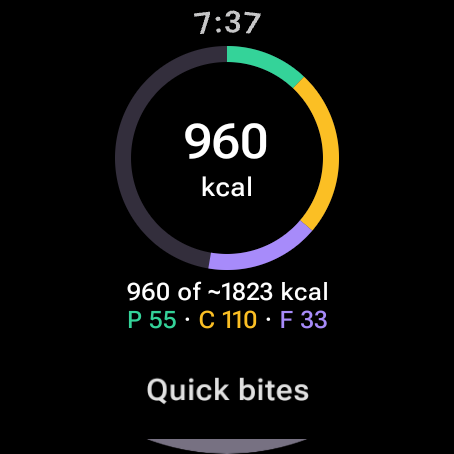
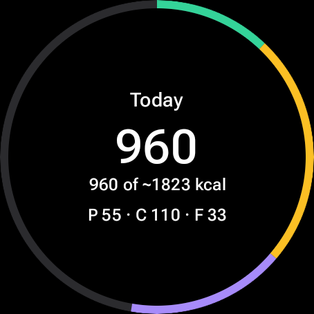
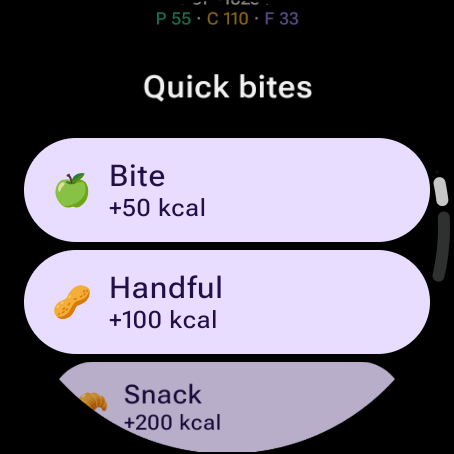
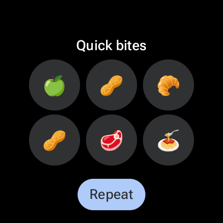
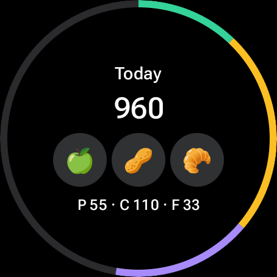
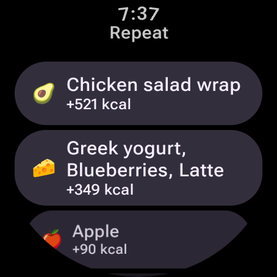
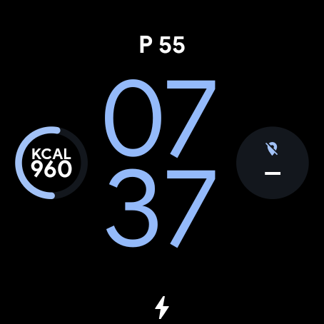

Щоденні інструменти
Magpie
Місце для випадкових думок, фото й голосових нотаток, поки вони не зникли.
Сфотографуйте страву, скоригуйте порцію й ведіть щоденник харчування з Bitey.

Сфотографуйте страву, виправте порцію, зареєструйте її.
Bitey (раніше Plate) — це приватний журнал харчування для щоденного харчування. Сфотографуйте їжу, опишіть її кількома словами, знайдіть їжу, відскануйте штрих-код або повторіть те, що ви часто їсте. Слідкуйте за калоріями, білками, вуглеводами, жирами та клітковиною разом із маленьким динозавром для компанії.
Оцінка фотографій і тексту є відправною точкою: перевірте продукти та відрегулюйте порції перед збереженням. Bitey допомагає вести щоденник харчування, який легко підтримувати, без корисної чи поганої їжі та необхідності зважувати кожен грам.
Застосунок для Android, Bitey — Приватний щоденник харчування, зберігає щоденник на вашому телефоні, без облікового запису й без сервера, що тримає ваші записи. Додавайте їжу вручну, за штрихкодом або як швидкий перекус, а зважування, тренди й резервні копії лишаються на пристрої. Bitey AI, необов'язкова підписка, читає фото страви або опис, який ви вводите, а ви перевіряєте й коригуєте кожну оцінку перед збереженням.
Застосунок для Android доступний у Google Play.
Записуйте їжу з головного екрана за допомогою віджета «Сьогодні в Bitey», скористайтеся плиткою швидких налаштувань фотографії їжі або натисніть і утримуйте значок програми для ярликів «Фото», «Галерея», «Штрих-код» і «Введіть». Нове привітання представляє способи запису їжі, швидких перекусів і повторення звичних страв з додатковим профілем, який залишається на вашому телефоні. Тенденції ваги та споживання допомагають вам стежити за прогресом з часом.
На цих скріншотах показано програму Android із створеними прикладами даних, включно з новим екраном привітання.



На широких екранах ваш день відкривається у двох стовпцях із загальними показниками, вагою та швидкими перекусами поруч із вашими стравами.


Підготовлено до випуску 1.1.9: супутник Wear OS для вашого підключеного телефону Android. Перегляньте сьогоднішні калорії та макроси, занотуйте швидкий перекус або повторіть їжу одним дотиком і скасуйте помилковий запис на годиннику.
Виберіть із трьох плиток: «Сьогодні» в Bitey, «Швидкі перекуси» Bitey або обидва разом. Додайте калорії сьогодні або макроси сьогодні на циферблат. Телефон веде щоденник; годинник отримує сьогоднішній підсумок і ярлики їжі.
На скріншотах годинника використовується той самий вигаданий щоденник, що й на скріншотах телефону.









Місце для випадкових думок, фото й голосових нотаток, поки вони не зникли.

Одне фото стає 3D-рельєфом, розділеним на шари для металевого портрета.

Змінюйте гравітацію та вирощуйте сад у спокійній фізичній головоломці.